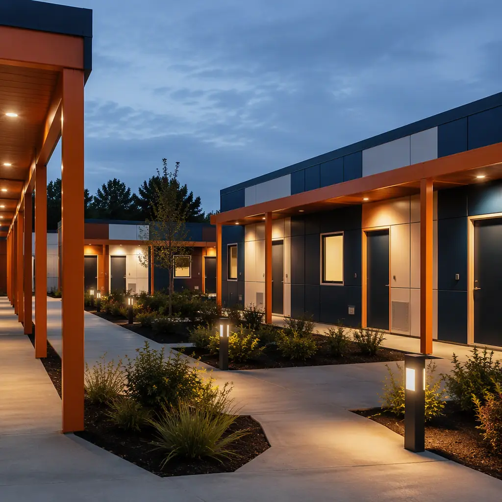
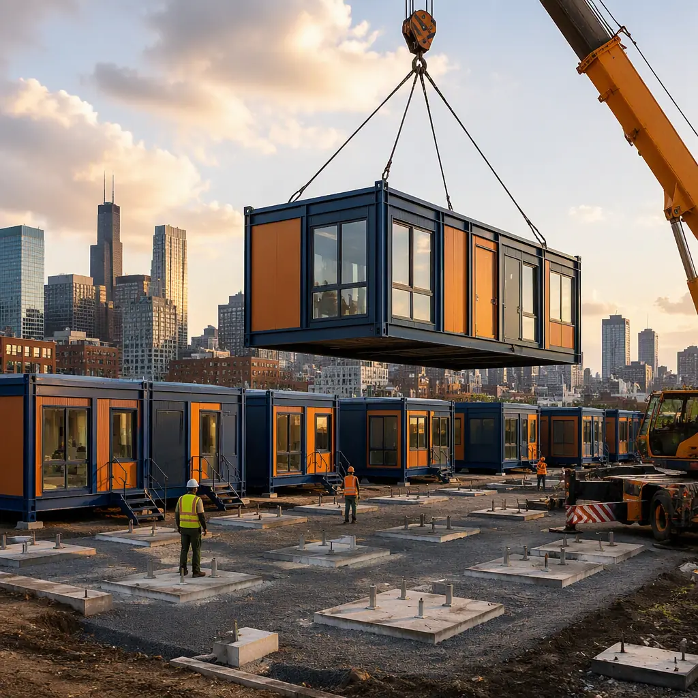
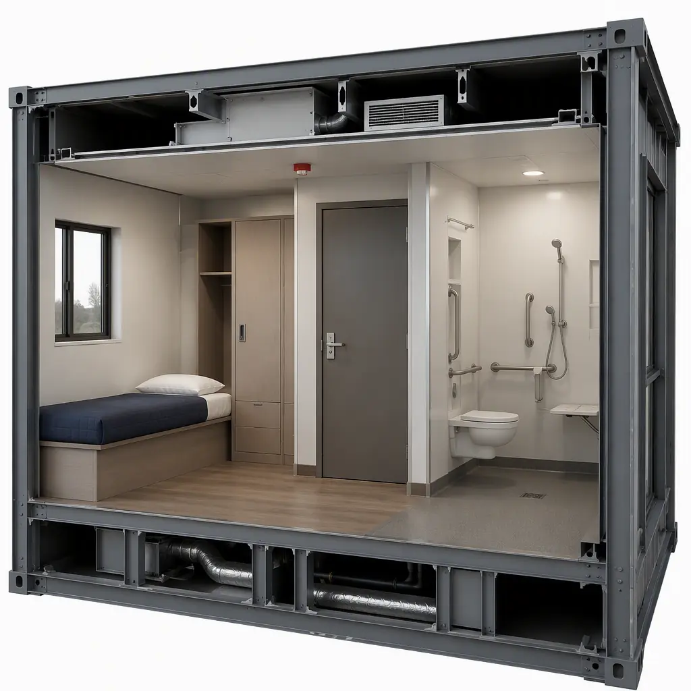

Every major US city faces the same impossible math: homelessness is rising, shelter capacity is static, and the two-to-five year timeline of conventional construction cannot respond to a need measured in months. The annual point-in-time count still exceeds 650,000 people nationally, and the majority of unsheltered people report that a private, safe place to sleep — not a mat in a converted gymnasium — is what would move them indoors. Modular prefabricated construction has become the fastest credible answer: private-room shelters, bridge housing villages, and permanent supportive housing built as factory-assembled modules, delivered to an existing parking lot or vacant parcel, and open for intake in as little as 90–150 days from funding approval. This guide covers the shelter program typologies, the design standards that make facilities safe and dignified, the funding and procurement paths available to municipalities and nonprofits, and how modular delivery fits the operating reality of homelessness response. For the adjacent patterns, see modular government and municipal buildings and modular affordable housing solutions.

The Shelter Capacity Crisis — and Why Speed Matters
The gap between shelter demand and supply is documented in every HUD Annual Homeless Assessment Report: emergency shelter utilization regularly exceeds 100% of rated capacity in high-cost metros, and families and seniors are the fastest-growing segments of the sheltered population. Cities that act fast see results — jurisdictions that deployed modular bridge housing reduced unsheltered counts measurably within 18–24 months, because a private room with a lockable door changes who is willing to come indoors. The construction constraint is the bottleneck: a conventional shelter is a 24–36 month project by the time funding, design, permitting, and construction complete, by which point the encampment it was meant to replace has grown. Modular delivery compresses the critical path the same way it does for disaster relief housing — factory fabrication runs while site utilities are installed, and the buildings set in days. The schedule-engineering behind this is documented in our modular scheduling guide.
Shelter Program Typologies
Homelessness response is not one building type but a continuum, and modular construction serves every rung:
- Emergency shelters (low-barrier). Overnight and short-stay facilities with private or semi-private rooms, intake and security stations, laundry, and meals. Low-barrier design — accepting people with pets, partners, and possessions — is a documented driver of usage, and private rooms are the single strongest retention feature.
- Bridge housing / interim housing. 60–180 day stays with case management, often delivered as a village of individual modules on a parking lot or vacant parcel, with shared kitchen and community buildings. Bridge housing is the fastest way to move people out of tents and into a pathway.
- Permanent supportive housing (PSH). Long-term units with on-site services — the gold-standard exit from homelessness. Modular PSH uses the standard multifamily module package with service spaces integrated, and can be delivered as infill on the same sites as interim housing.
- Support facilities. Hygiene centers (showers and laundry), navigation centers, and administration modules that anchor a campus and keep operations running around the clock.
The repeated-unit logic of shelters — many identical rooms, one support core — is precisely what modular construction does most efficiently, the same pattern covered in modular temporary and relocatable facilities.

Design for Dignity, Safety & Operations
The shelters that fail are the ones designed without respect for the people who use them and the staff who run them. Modular construction builds the features that make shelters work — and stay funded — directly into the product:
- Private rooms with lockable doors. A 120–180 sq ft room per resident (or per family) with a lockable door, bed, storage, and HVAC control is the single most effective design decision; modular rooms arrive fully finished with the lock, window, and egress hardware factory-installed.
- Security architecture. A single controlled entry, a staffed security office with full sightlines, camera infrastructure pre-wired, and corridor layouts that eliminate blind corners — installed and tested in the factory, not improvised on site.
- Case management and services space. Private offices for case managers, a medical exam room, a dining hall, and a laundry room give residents a path from intake to housing placement without leaving the campus — the service-integration pattern of modular community health centers.
- Durability and maintenance. Shelters are among the hardest-used buildings in the civic inventory; factory-built modules use impact-resistant wall systems, commercial-grade finishes, and easily replaced components — the lifecycle approach covered in modular lifecycle costs.

Speed & Cost — The Municipal Math
| Program (50-bed bridge housing village) | Conventional | Modular |
|---|---|---|
| Design & approval | 6–12 months | 2–4 months (prototype-based) |
| Construction | 12–20 months | 3–5 months (factory + set) |
| Cost per bed (built) | $120k–180k | $95k–150k |
| Time from funding to intake | 18–32 months | 4–7 months |
| 50-bed village total | $6–9M | $4.75–7.5M |
Every month of delay carries a social cost that is hard to price and a financial cost that is not: emergency services, encampment cleanups, and ER visits for unsheltered residents routinely cost municipalities $20k–$50k per person per year — meaning a 50-bed village pays for a meaningful share of itself within its first year of operation. The cost-per-square-foot benchmarks are detailed in our 2026 modular cost guide.
Funding & Procurement Paths
Shelter programs are funded through a patchwork of federal, state, and local sources, and modular delivery aligns with every major one:
- HUD Continuum of Care (CoC) and ESG. CoC program awards fund new PSH and supportive services; the Emergency Solutions Grant funds shelter operations and rapid re-housing. Modular projects are attractive CoC applications because they can show beds delivered within the grant performance period — a chronic failure point for conventional projects.
- State and county homelessness programs. Dozens of states have launched dedicated homelessness infrastructure funds (many seeded by the federal State and Local Fiscal Recovery Funds) specifically intended to create interim and permanent housing; most carry spend-by deadlines that modular delivery is uniquely able to meet.
- Municipal capital budgets and bonds. Cities procuring shelters through RFP or design-build can specify modular delivery and compress the whole cycle — the public procurement mechanics are covered in our RFP and procurement guide, and the funding structures in our financing guide.
- Nonprofit and philanthropic capital. Community development financial institutions and housing-focused foundations fund shelter capital; the shorter construction period reduces the soft-cost burden and lets donors see beds open within their giving cycle.
Site Strategies — Where Shelters Go
The hardest problem in homelessness response is often not the building but the site — neighborhoods resist, zoning restricts, and developable parcels are scarce. Modular construction expands the viable site universe in three ways. First, parking lots: a 50-bed village of single-story modules fits on roughly one acre — about 150–180 parking spaces — and can be installed on city-owned lots, church parking, and former retail sites with minimal site work, then relocated when the parcel is developed (the relocation model is a documented modular advantage). Second, infill and underutilized parcels: because modules set on shallow foundations or pads, sites with poor soil or tight access that would disqualify conventional construction become viable. Third, phasing: a city can open a 30-bed core in 90 days and expand to 60–100 beds in later phases as funding and neighborhood buy-in grow — the phased-deployment pattern of modular additions and expansions. Zoning and community-engagement strategy is covered in our permitting and zoning guide.
Is Modular Right for Your Shelter Program?
Modular delivery is the right answer when the need is urgent (encampments are growing, a winter shelter deadline is approaching, a funding deadline is fixed), when the site is constrained (parking lots, infill parcels, leased land), and when the program may change (interim today, permanent tomorrow — modules can be reconfigured, expanded, or relocated). For a permanent PSH building on a greenfield site with a patient funding timeline, conventional construction can still compete on price; for the emergency-to-bridge continuum that dominates municipal homelessness response, modular converts a multi-year capital project into a same-fiscal-year deliverable — with private rooms, security, and services built in rather than added on. The same factory-built logic that serves municipal building programs and affordable housing applies to the facilities that end street homelessness.